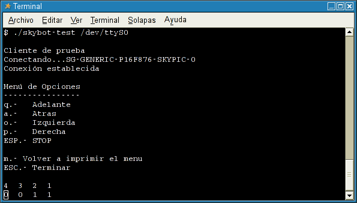

|
Skybot-test: Prueba del robot Skybot desde Linux |
|
|
El programa skybot-test es un cliente para el servidor skybot-monitor, basado en el servidor genérico (proyecto Stargate) que permite manejar el robot skybot desde el PC y leer el estado de los cuatro sensores. Es muy útil para detectar problemas y hacer pruebas. También sirve de base para crear otros programas más complejos, como por ejemplo uno que tenga una interfaz gráfica en GTK.
Plataforma: Linux, aunque sería muy fácil portarlo a windows con Cygwin
Creado para el skybot, pero se puede adaptar facilmente para cualquier otro robot que use un microcontrolador PIC.
Programa para consola
Licencia GPL. Se conceden permisos para copiar, distribuir, modificar y redistribuir las modificaciones.
Es un único fichero ejecutable, compilado estáticamente por lo que no es necesario instalar ninguna librería. Los pasos para instalarlo son:
Bajar el fichero compilado: skybot-test-bin-xx.tgz
Descomprimirlo: tar vzxf skybot-test-bin-xx.tgz
Como root, copiar el fichero ejecutable al directorio /usr/local/bin: cp skybot-test /usr/local/bin
Dar permisos de lectura y escritura en el dispositivo serie que utilizaremos: chmod a+rw /dev/ttySX, donde X depende del puerto serie a usar. Lo normal es utilizar el dispositivo /dev/ttyS0
Para que funcione es necesario que esté cargado el programa skybot-monitor en la tarjeta Skypic. Viene cargado por defecto, por lo que no hará falta cargarlo si no se ha grabado antes ningún programa.
Alimentar el skybot y conectarlo al puerto serie del PC.
Ejecutar el skybot-test, indicando el dispositivo serie. Si no se especifica ninguno se toma por defecto el /dev/ttyS0
$ skybot-test /dev/ttyS0
Aparecerá lo siguiente:
|
 |
Mediante las teclas o,p,q y a podremos mover el robot. En la parte inferior se muestra el estado de los 4 sensores de infrarrojos (S1, S2, S3 y S4) y de los dos bumpers (B1 y B2). En los sensores infrarrojos un 0 indica que está leyendo blanco y un 1 negro. En los bumpers un 1 indica que se esta aprentando el pulsador del mismo, un 0 indica que esta en estado normal
Para compilar el skybot-test:
Es necesario tener instalada la libstargate (versión 1.0.1) y el paqute de desarrollo libstargate-dev (1.0.1). Ir a esta página.
Bajar el paquete con las fuentes (skybot-test-xx.tgz)
Descomprimirlas (tar vzxf skybot-test-xx.tgz)
Entrar en el directorio creado
Por un BUG en el paquete de la librería 1.0.1, hay que establecer el siguiente enlace simbólico, como root:
# ln -s /usr/libstargate-1.0.1.a /usr/lib/libstargate.a
Ejecutar make
|
Descarga de ficheros |
|
Version compilada para i686. Compilación estática. Version 0.2 |
|
|
Fuentes y ejecutable. Version 0.2 |
Taller de robótica en la Universidad Autónoma de Madrid
Taller de robótica en la Universidad de Cádiz
Taller de robótica en la Campus Party 2005 de Valencia
Servidor skybot-monitor, basado en el servidor genérico.
14/Feb/2006. Versión 0.1 revisada para el taller de robótica de la Universidad Autónoma de Madrid.